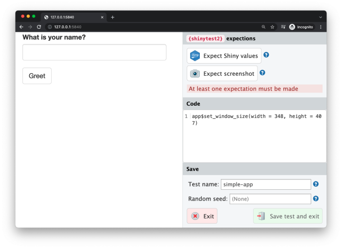

Why test Shiny applications?
After you get your Shiny application to a state where it works, it’s often useful to have an automated system that checks that it continues to work as expected. There are many possible reasons for an application to stop working. These reasons include:
An upgraded R package has different behavior. (This could include Shiny itself!)
You make modifications to your application.
An external data source stops working, or returns data in a changed format.
One way to detect these problems is with manual testing – in other words, by having a person interact with the app in a browser – but this can be time-intensive, inconsistent, and imprecise. Having automated tests can alert you to these kinds of problems quickly and with almost zero effort, after the tests have been created.
How testing works with shinytest
The shinytest2 package provides tools for creating and running automated tests on Shiny applications.
shinytest2 uses testthat’s snapshot-based testing strategy. The first time it runs a set of tests for an application, it performs some scripted interactions with the app and takes one or more snapshots of the application’s state. These snapshots are saved to disk so that future runs of the tests can compare their results to them.
To create tests, the easiest method is to use the record_test() function. This launches the application in a web browser and records your interactions with the application. These interactions are saved in tests/testthat/test-shinytest2.R and are run using the strategy described above.
Getting started
Begin by installing shinytest2 from CRAN:
install.packages("shinytest2")Recording tests
This is the general procedure for recording tests:
Run
record_test()to launch the app in a test recorder.Create the tests by interacting with the application and telling the recorder to make an expectation on the state at various points.
-
Quit the test recorder. When you do this, three things will happen:
The test script will be saved in
tests/testthat/test-shinytest2.Rin a subdirectory of the application.If you are running in the RStudio IDE, it will automatically open this file in the editor.
The tests will execute
To record tests, we first need an app.
Here is a simple app that I’ve placed in simple-app/app.R:
library(shiny)
ui <- fluidPage(
textInput("name", "What is your name?"),
actionButton("greet", "Greet"),
textOutput("greeting")
)
server <- function(input, output, session) {
output$greeting <- renderText({
req(input$greet)
paste0("Hello ", isolate(input$name), "!")
})
}
shinyApp(ui, server)To test it, I now load {shinytest2}, and call record_test() with the path to my app:
library(shinytest2)
record_test("simple-app/")In a separate R process, this launches the Shiny application to be tested. We’ll refer to this as the target app. This also launches a special Shiny application in the current R process which displays the target app in an iframe and has some controls outside the iframe. We’ll refer to this as the recorder app. You will see something like this:

On the left is the target app (in this case, the “What is your name” app), and on the right is the recorder app sidebar. Note that you may need to make the browser window wider because the recorder sidebar occupies some space.
The sidebar on the right displays some controls for the test recorder, as well as a the set of Code for all expectations and actions. As you interact with the target app – in other words, when you set inputs on the app – you will see those actions recorded in the Code output.
For testing a Shiny application, setting inputs is only one part. It’s also necessary to check that the application produces the correct outputs. This is accomplished by taking expectations of the application’s state.
There are two ways to record output values. One way is to take an expectation of the application’s state. This will record all input values, output values, and exported values (more on exported values later). To do this, click the Expect values button on the recorder app.
After modifying some inputs and making an expectation, it will look something like this:

It is also possible to take a targeted value expectation. This is a snapshot of one or more specified output (instead of the default, which is to snapshot the entire application). To do this, hold down the Control (or Command) button on your keyboard and click on an output; it will snapshot just that one output.
When you are done recording a sequence of events, click on the Save test and exit button. If you are in the RStudio IDE, it will open the test script tests/testthat/test-shinytest2.R from a subdirectory of the application.
# File: tests/testthat/test-shinytest2.R
library(shinytest2)
test_that("{shinytest2} recording: simple-app", {
app <- AppDriver$new(name = "simple-app", height = 407, width = 348)
app$set_inputs(name = "Barret")
app$click("greet")
app$expect_values()
})Running tests
When you quit the test recorder, it will automatically run the test script. There are three separate components involved in running the tests:
First is the test driver. This is the R process that coordinates the testing and controls the web browser. When working on creating tests interactively, this is the R process that you use.
Next is the Shiny process, also known as the server. This is the R process that runs the target Shiny application.
Finally, there is the web browser, also known as the client, which connects to the server. This is a headless web browser – one which renders the web page internally, but doesn’t display the content to the screen (
{chromote}).
When you exit the test recorder, it will (by default) automatically run the test script and will print something like this:
• Saving test runner: tests/testthat.R
• Saving test file: tests/testthat/test-shinytest2.R
• Running recorded test: tests/testthat/test-shinytest2.R
✔ | F W S OK | Context
✔ | 2 1 | shinytest2 [2.6s]
─────────────────────────────────────────────────────────────────────────────────────────────────────────────────────────────────────
Warning (test-shinytest2.R:7:3): {shinytest2} recording: simple-app
Adding new file snapshot: 'tests/testhat/_snaps/simple-app-001_.png'
Warning (test-shinytest2.R:7:3): {shinytest2} recording: simple-app
Adding new file snapshot: 'tests/testhat/_snaps/simple-app-001.json'
─────────────────────────────────────────────────────────────────────────────────────────────────────────────────────────────────────
══ Results ══════════════════════════════════════════════════════════════════════════════════════════════════════════════════════════
Duration: 2.6 s
[ FAIL 0 | WARN 2 | SKIP 0 | PASS 1 ]Behind the scenes, it runs test_app(). You can manually run the tests with this:
test_app("simple-app", filter = "shinytest2")This will play back the interactions and record snapshots, as specified in the test script. The very first time the tests are run, they will be saved in a subdirectory of the app called tests/testthat/_snaps. These are the expected results, and future test runs will be compared against them.
The directory will contain two types of files for different expectations. For example:
001.json
001_.png
002.png- The
.jsonfile is a JSON representation of the state of the application whenapp$expect_values()was called. - The
.pngfile is a screenshot of the application fromapp$expect_screenshot(), which you can use to insure that the visual state of the application does not change. - The
_.pngfile is a debug screenshot of the application whenapp$expect_values()was called. This file should be tracked usinggitto know how the application visually changes over time. However, if there is a difference found in a new screenshot, the difference will not throw an error.
The JSON file stores the state of all the input, output, and export values at the time of the snapshot:
{
"input": {
"greet": 1,
"name": "Barret"
},
"output": {
"greeting": "Hello Barret!"
},
"export": {
}
}If you are using a source control system (like git), you should check in the expected results. (And ignore _.new.png files.)
Subsequent test runs
After the initial test run, you can run the tests again in the future to check for changes in your application’s behavior. If there are no changes to the snapshots, you will just see something like this, with no additional output:
> test_app("path/to/app")
✔ | F W S OK | Context
✔ | 1 | shinytest2 [2.2s]
══ Results ══════════════════════════════════════════════════════════════════════════════════════════════════════════════════════════
Duration: 2.2 s
[ FAIL 0 | WARN 0 | SKIP 0 | PASS 1 ]If the results are exactly the same, then the test is considered successful.
If there are any differences between the latest run and the expected results, you’ll see output like this:
✔ | F W S OK | Context
✖ | 1 0 | shinytest2 [2.1s]
─────────────────────────────────────────────────────────────────────────────────────────────────────────────────────────────────────
Failure (test-shinytest2.R:7:3): {shinytest2} recording: simple-app
Snapshot of `file` to 'shinytest2/simple-app-001.json' has changed
Run `testthat::snapshot_review('shinytest2/')` to review changes
Backtrace:
1. app$expect_values()
at test-shinytest2.R:7:2
2. shinytest2::app_expect_values(...)
at shinytest2.nosync/R/app-driver.R:651:6
3. shinytest2::app__expect_snapshot_file(...)
at shinytest2.nosync/R/app-driver-expect-values.R:211:2
4. testthat::expect_snapshot_file(...)
at shinytest2.nosync/R/expect-snapshot.R:35:2
─────────────────────────────────────────────────────────────────────────────────────────────────────────────────────────────────────
══ Results ══════════════════════════════════════════════════════════════════════════════════════════════════════════════════════════
Duration: 2.2 s
[ FAIL 1 | WARN 0 | SKIP 0 | PASS 0 ]To view the differences, follow the prompted code testthat::snapshot_review('shinytest2/') from within your application directory.
It will look something like this:

After inspecting the changes, you can choose to update the expected results (that is, replace the old expected results with the new current results), or to just quit without updating.
You should update the results if the changes are expected. You should skip/quit without updating if the changes are unexpected.
Multiple test scripts
In the example above, we had a single test script, named test-shinytest2.R.
If you want to have more than one set of tests for an application, you can record new tests, each with a unique name. You can enter the name when recording your tests:

The saved test can be moved to a different testing file, e.g. tests/testthat/test-simple-app.R. When you run test_app("path/to/app"), it will run all the tests scripts in the application’s tests/testhat directory.
Interactive R Markdown documents
shinytest2 can be used with interactive R Markdown documents that use runtime: shiny or server: shiny (sometimes also referred to as Shiny documents). This includes those that use the flexdashboard package.
Shiny documents have some differences compared to regular Shiny applications, and so the tests are slightly different. For an example of an interactive Rmd with tests, please follow this link.
Randomness
In a Shiny Rmd application, the UI of the application is created dynamically, using some randomly generated IDs. To make the results repeatable, you must set a random seed; otherwise the output will have slight differences in each run. See the section on controlling random values for more information.
One .Rmd file per directory
For testing Shiny documents, only one .Rmd file is allowed per directory. This is because of the way that the test directory is structured. (Note that if you name your Shiny document index.Rmd, then when deployed on Shiny Server, the URL can use the directory name, like http://mydomain.com/dirname/, instead of http://mydomain.com/dirname/index.Rmd. When deployed on RStudio Connect or Shinyapps.io, the filename is automatically not used in the URL.)
Prerendered Shiny documents
Some Shiny documents use runtime: shiny_prerendered, which helps speed up page loading time. Normally, the first time these applications are run, they will leave behind a generated .html file as well as a cache directory named myfile_data/.
You can remove these files by adding this to the end of your test script (assuming the name of your document is doc.Rmd):
rmarkdown::shiny_prerendered_clean("../doc.Rmd")Alternatively, you can save the generated files, but then the tests will be run with the generated files, so the prerendering step will not be run for future tests.
For an example of a prerendered .Rmd and tests, please follow this link.
Next
Learn more about shinytest with the testing in depth article.